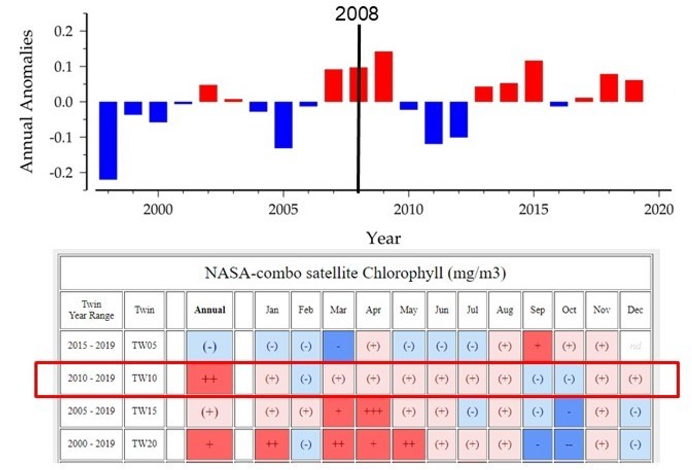

Maps - Columbia River plume
 Environmental conditions that transport toxic Pseudo-nitzschia from northern (Juan de Fuca Eddy) and southern (Heceta Bank) sources in summer/fall in the Pacific Northwest (a) under prevailing upwelling-favorable winds; (b) during a reversal to weak downwelling-favorable winds; and © in late winter/spring, prior to the spring transition. Surface currents are shown with arrows. Shaded areas on shore are clamming beaches. Shaded areas offshore indicate freshwater plumes from the Columbia River and the Strait of Juan de Fuca. ‘‘Barrier’’ and ‘‘Conduit’’ notations refer to the role of the Columbia plume in transporting HABs to the Olympic Coast under different oceanographic conditions. Image: Hickey et al., 2013.
Environmental conditions that transport toxic Pseudo-nitzschia from northern (Juan de Fuca Eddy) and southern (Heceta Bank) sources in summer/fall in the Pacific Northwest (a) under prevailing upwelling-favorable winds; (b) during a reversal to weak downwelling-favorable winds; and © in late winter/spring, prior to the spring transition. Surface currents are shown with arrows. Shaded areas on shore are clamming beaches. Shaded areas offshore indicate freshwater plumes from the Columbia River and the Strait of Juan de Fuca. ‘‘Barrier’’ and ‘‘Conduit’’ notations refer to the role of the Columbia plume in transporting HABs to the Olympic Coast under different oceanographic conditions. Image: Hickey et al., 2013.
Maps - Streamflow, sediments, N, P
 Maps from USGS SPARROW models, depicting Washington watersheds and relative contributions of streamflow (upper left), suspended sediments (upper right), total phosphorus (lower left), and total nitrogen (lower right) in 2012. Source: Wise, 2020.
Maps from USGS SPARROW models, depicting Washington watersheds and relative contributions of streamflow (upper left), suspended sediments (upper right), total phosphorus (lower left), and total nitrogen (lower right) in 2012. Source: Wise, 2020.
Trends - Chlorophyll anomaly
 Annual anomalies for chlorophyll (mg/m3), log10-transformed, for 1998–2019. Vertical black line indicates the year of the last condition report (2008). Red bars are positive anomalies, and blue bars are negative anomalies. Red box indicates the highly significant increasing trend for the year range 2010–2019. Decreases are denoted by blue shading and “(-)”, and increases are denoted by red shading with “(+)”. Significant changes do not have parentheses around the +/- sign. Source: NOAA Fisheries, 2020d; O’Brien & Oakes, 2020; Image: A. Mabrouk/NOAA.